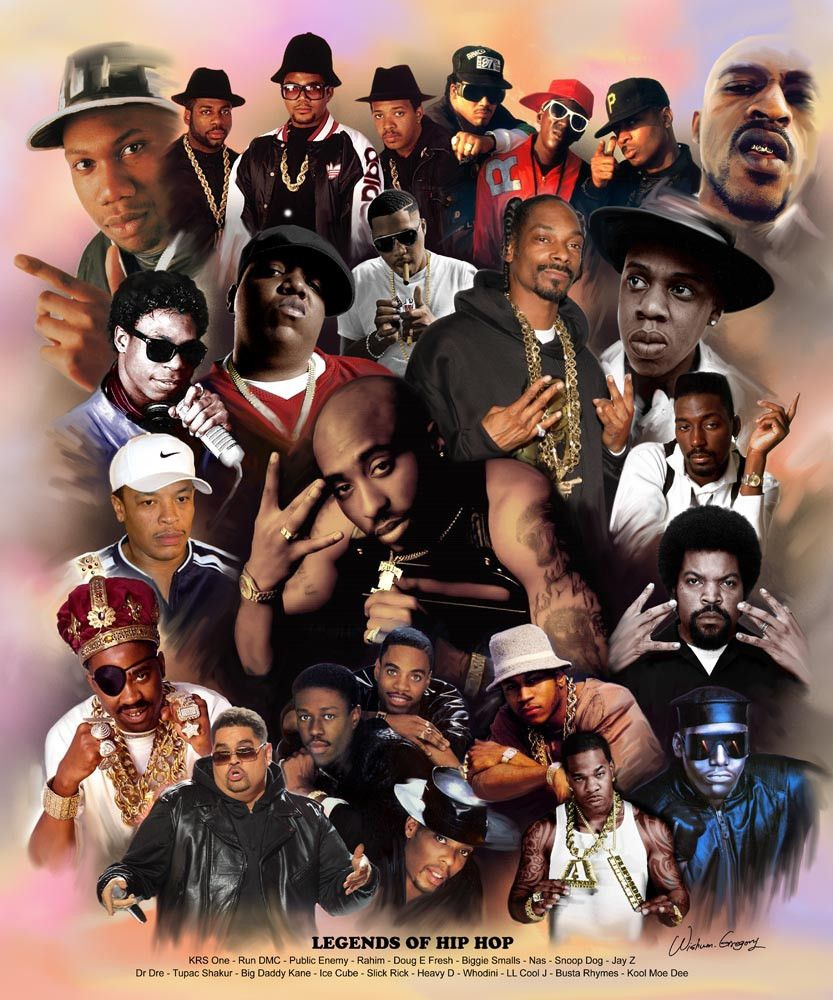

<!DOCTYPE html>
<html lang="en"></html>
<html>

<head>
  <meta charset="UTF-8">
  <meta http-equiv="X-UA-Compatible" content="IE=edge">
  <meta name="viewport" content="width=device-width, initial-scale=1.0">
  <link rel="stylesheet" type="text/css" href="../css/global.css">
  
  <style>
    #sobre {
    background-color: #413f3f;
    padding: 20px;
    display: flex;
    align-items: center;
  }

  .sobrealign {
    display: flex;
    align-items: center;
    margin-right: 10px;
  }
  </style>
  
  <title>Meu Site.</title>
</head>

<body>
  <header>
    <center><h1>A Influência do Hip-Hop.</h1></center>
    <nav>
      <ul>
        <li><a href="index.html">Home</a></li>
        <li><a href="destaques.html">Destaques</a></li>
        <li><a href="novidades.html">Novidades</a></li>
        <li><a href="galeria.html">Galeria</a></li>
        <li><a href="sobrenos.html">Sobre Nós</a></li>
        <li><a href="contato.html">Contato</a></li>
        <li style="float: right;"><a button id="dark-mode-toggle">Dark Mode</a></li>
      </ul>
    </nav>
  </header>

  <section id="sobre">
    <div class="sobrealign">
      
      <div class="textos">
        <h2>Sobre o Hip Hop</h2>
        <p>Desde sua origem na década de 1970 em Nova York, o hip-hop se espalhou pelo mundo através da música e da dança. O gênero inspirou milhões de pessoas a ouvir e dançar o hip-hop, e a se tornar artistas. Essa influência é o motivo pelo qual o Congresso dos EUA aprovou um projeto de lei no ano passado para designar novembro como o Mês Nacional da História do Hip-Hop. “A celebração da história do hip-hop e o estudo dele são essenciais para nossa democracia, nossa inovação, nossa voz e quem somos como seres humanos”, disse o deputado Jamaal Bowman, que patrocinou o projeto com a deputada Maxine Waters. Em 2017, o hip-hop ultrapassou o rock ‘n’ roll* como o gênero de música mais popular nos Estados Unidos. Artistas de hip-hop americanos famosos incluem Jay-Z, Tupac Shakur, Notorious B.I.G. e Ice Cube.</p>
        <h2>Mas afinal, o que é o hip-hop?</h2>
        <p>Em agosto de 1973, durante uma festa com dança no bairro do Bronx, em Nova York, o DJ jamaicano-americano Kool Herc experimentou tocar o mesmo disco em diferentes pratos toca-discos e mixar os sons. Os DJs que seguiram seu exemplo desencadearam um movimento cultural em Nova York que logo inspirou outros artistas nos Estados Unidos. A dança hip-hop é amplamente popular em todo o mundo. Desde 2002, a competição de dança Hip-Hop Internacional reuniu mais de 50 países para participar do Campeonato Mundial de Dança Hip-Hop, realizado anualmente, em uma cidade diferente a cada ano.</p>
      </div>
    </div>
  </section>

  <footer>
    <p>&copy; 2023 Meu Site de Hip Hop. Todos os direitos reservados.</p>
  </footer>
  <script src="../js/darkmode.js"></script>
  <script src="../js/script.js"></script>
</body>
</html>
